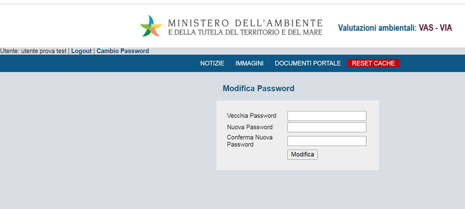

Indice
Sommario
1. Informazioni relative al prodotto e al suo utilizzo
2.1. Descrizione dei campi della videata
3.1. Descrizione dei campi della videata
4.2.1.3. Modifca/Elimina Notizia
4.2.2.4 Modifica/Elimina Immagine
4.2.3.1 Inserimento documenti portale
4.2.3.2 Modifica / Elimina documento portale
4.2.4.1 Elenco elementi carosello
4.2.4.2 Inserimento elemento carosello
4.2.4.3 Pubblicazione elemento
4.2.5.1 Inserimento Dati ambientali home
4.2.5.2 Modifica/Pubblicazione Dati ambientali home
4.2.6.2 Inserimento Widget Notizia
4.2.6.3 Inserimento Widget Embed
4.2.6.4 Inserimento Widget InEvidenza
4.2.6.5 Inserimento Widget Sezione
4.2.9.3 Abilita/disabilita utenti
Per promuovere la partecipazione del pubblico nei processi decisionali di competenza statale, in attuazione di quanto previsto dalla Convezione di Aarhus e come sancito nei principi generali di cui alla Parte Prima del D.Lgs.152/2006 e s.m.i. in materia di accesso alle informazioni ambientali e di partecipazione a scopo collaborativo, la Direzione generale per la crescita sostenibile e la qualità dello sviluppo (CRESS) si è dotata di un Portale web dedicato alle Valutazioni e autorizzazioni ambientali (www.va.minambiente.it). La pubblicazione della documentazione e delle informazioni sul portale VA consente alla CRESS di adempiere all’obbligo di garantire l’informazione la partecipazione del pubblico alle procedure di VAS e VIA di competenza statale.
Il portale fornisce informazioni in tempo reale sullo stato di avanzamento delle valutazioni e autorizzazioni ambientali in corso, informazioni amministrative e documenti tecnici riguardanti i progetti e i piani/programmi in valutazione, gli atti conclusivi emanati dal 1989 ad oggi, statistiche e dati di sintesi delle valutazioni concluse, guide operative, indicazioni tecniche e modulistica, dati e informazioni sullo stato dell’ambiente utili alla redazione degli studi ambientali.
Per permettere al cittadino di comprendere a pieno le caratteristiche dei progetti, oltre alle informazioni di tipo amministrativo e alla documentazione tecnica pubblicata sono disponibili, direttamente dalla home-page, per i progetti in fase di osservazione, le descrizioni in linguaggio semplice dei progetti e le sintesi non tecniche. Per facilitare l’immediata individuazione della localizzazione delle opere sul territorio, sono inoltre messe a disposizione mappe dinamiche (servizi webGIS) di dettaglio e il quadro d’unione delle procedure di VIA e di VAS in corso.
Al fine di fornire chiare informazioni ai proponenti ed ai cittadini sugli aspetti amministrativi delle procedure di VIA e di VAS, nel portale delle valutazioni e autorizzazioni ambientali, sono inoltre disponibili guide operative (Sezione: Spazio per il proponente), la modulistica da utilizzare per la presentazione delle diverse istanze e dei documenti da allegare all’istanza (ad esempio l’elenco delle autorizzazioni ambientali o la dichiarazione del professionista che predispone lo studio di impatto ambientale) informazioni generali per il cittadino quali le modalità per l’invio delle osservazioni e per l’accesso agli atti (sezione Spazio per il cittadino).
Di seguito sono descritte le funzionalità a disposizione dell’utente amministratore per la gestione dei dati del Portale VA.
1. Informazioni relative al prodotto e al suo utilizzo
Il modello di interazione tra l'utente ed il sistema è quello tipico dell'ambiente Internet. Lo strumento utilizzato per la fruizione dell’applicazione è un browser HTML di ultima generazione.
La risoluzione consigliata è 1920x1080; risoluzioni superiori migliorano la visualizzazione delle maschere e facilitano l’inserimento dei dati relativi, indipendentemente dal numero dei colori.
Di seguito sono fornite informazioni sulle convenzioni e sugli standard utilizzati nell’attivazione delle funzioni ed indicazioni atte a facilitare o rendere più efficiente l’uso del sistema stesso.
Layout
La presenza della barra di navigazione del browser dipende dalle impostazioni fissate dall’utente ed è ininfluente ai fini della usabilità dell’applicazione, anzi il suo utilizzo per passare da una maschera all’altra è fortemente sconsigliato.
Nell’Home page e nelle pagine successive è possibile attivare le funzioni corrispondenti attraverso link ipertestuali o pulsanti, ossia tasti per compiere operazioni, quali ad esempio ricercare, cancellare, confermare, visualizzare, tornare alla pagina precedente, annullare, etc.
Le maschere dell’applicazione sono tutte costituite dalla stessa struttura di 3 sezioni principali, come indicato nella figura seguente:
· Area della testata
· Menù di navigazione
· Contenuto della pagina
Area della testata
Nell’area della testata sono presenti:
· in alto a sinistra il logo MATTM; in alto a destra il nome dell’applicazione: “Valutazioni e autorizzazioni ambientali: VAS – VIA - AIA”.
Area del menu
Nell’area del menu sono presenti:
· in alto a sinistra, sulla prima riga, l’identificativo dell’utente che ha effettuato l’accesso, il link per terminare la sessione di lavoro (Logout) ed il link per effettuare il cambio password.
· Sulla seconda riga il menù di navigazione che consente di accedere alle funzionalità del sistema.
Area del contenuto
Nell’area del contenuto sono implementate le funzionalità dell’applicazione: in essa è possibile effettuare inserimenti , ricerche di entità, visualizzarne e modificarne gli attributi. In alcuni casi, per visualizzare tutti i campi presenti, è necessario scorrere la maschera mediante la barra di scorrimento verticale. In alto sulla destra sono generalmente presenti i pulsanti di navigazione che permettono di confermare o annullare le eventuali modifiche apportate e di procedere attraverso i flussi applicativi.
Pertanto, per una corretta navigazione, non devono essere utilizzati all’interno del browser né l’indirizzo http (U.R.L.) posto in alto sullo schermo, né i comandi del browser di richiamo diretto delle pagine (ad esempio: Avanti, Indietro, Aggiorna, Preferiti, Cronologia, ecc.), bensì i comandi messi a disposizione dall’applicazione.
Uso del mouse
Il mouse si utilizza per:
- spostare il cursore da un campo all’altro dello schermo;
- aprire e scorrere liste;
- valorizzare le caselle di spunta;
- attivare i pulsanti contenuti nelle maschere.
Cancellazione del valore di un campo
Per cancellare un campo testo occorre selezionare il valore in esso contenuto e premere il tasto canc della tastiera. In alternativa, posizionato il cursore del mouse all’interno del campo, occorre premere il tasto back space della tastiera per cancellare a ritroso un carattere alla volta.
Ricerca di un elemento in un elenco
Per consentire all’utente di immettere un valore corrispondente ad una voce di una specifica anagrafe, il sistema offre la possibilità di scegliere un elemento da una lista (menu a tendina), attivabile facendo click con il mouse sulla freccia della casella combinata:
N.B.: nel caso in cui gli elementi dell’elenco non possano essere visualizzati in un’unica soluzione, il sistema rende disponibili delle barre di scorrimento che permettono di visualizzare in successione tutte le voci della lista trattata.
Inserimento dei dati
L’inserimento di dati è facilitato, ove previsto, dalla presenza di liste di valori permessi. In particolare, gli elementi su cui operare sono i seguenti:
|
|
casella di input, per i campi digitabili dello schermo; |
|
|
combo- box, per la lista di voci selezionabili; |
|
|
check-box, per indicare una scelta fra le diciture proposte; |
|
|
scroll-bar, ossia barre di scorrimento orizzontale/verticale dello schermo. |
Formato dei campi “data”
Il formato previsto per l’immissione e la visualizzazione delle date segue la notazione:
Ø “gg/mm/aaaa” (giorno/mese/anno).
Spostamento tra campi di inserimento
Per spostarsi su un campo occorre fare click con il mouse sul campo prescelto.
Lo spostamento da un campo all’altro è possibile anche in maniera sequenziale tramite il tasto “TAB” ( ) (campo successivo) o la combinazione dei tasti “SHIFT” ( ) + ”TAB” ( ) (campo precedente).
Messaggi
Il sistema prevede messaggi proposti nella maschera in cui si sta operando, che visualizzano una comunicazione rivolta all’utente.
Tale comunicazione contiene informazioni sul lavoro in corso e in base alla sua natura si distingue in:
- comunicazione funzionale di tipo “informativo”: errori funzionali (es. “campo obbligatorio non editato”), esito di verifiche e controlli funzionali;
- comunicazione tecnica di tipo “esito operazione”: esiti/errori tecnici (es. “il sistema ha correttamente eseguito l’operazione”).
Eseguite le operazioni di avvio del browser, l’utente deve accedere al portale VAS-VIA-AIA e proseguire verso l’accesso al back-end del sistema specificando il percorso “/admin”.
Al fine di garantire un adeguato livello di sicurezza e quindi di evitare che le funzioni possano essere utilizzate da personale non autorizzato, la pagina iniziale del back-end con la maschera per l’autenticazione delle credenziali, per poter accedere all’applicazione, è configurata per poter essere richiamata solamente da un client interno alla rete dell’ente. L’utilizzo di Nome utente e Password consentono inoltre di abilitare gli utenti a specifiche funzionalità.
Le credenziali per il primo accesso per il profilo di Amministratore, sono fornite in fase di installazione del software.
2.1. Descrizione dei campi della videata
Sezione Autenticazione Utente
- “Nome utente” (campo testo editabile obbligatorio): è l’identificativo con cui il sistema riconosce l’utente;
- “Password” (campo testo non in chiaro editabile obbligatorio): è la parola chiave assegnata all’utente, legata in modo univoco all’identificativo. La password non è visibile all’atto della sua digitazione, affinché risulti impossibile che eventuali estranei presenti possano venirne a conoscenza; al suo posto compaiono degli asterischi.
Funzionalità
- “Accedi” (pulsante): la pressione del pulsante permette di accedere all’applicazione.
Effettuati i necessari controlli di autorizzazione ed autenticazione, si prospetta l’Home Page dell’applicazione che presenta, sulla parte area del menu, le funzionalità corrispondenti al profilo attribuito all’utente.
Selezionando una delle voci, l’utente sarà instradato verso la maschera applicativa di partenza relativa alla funzione selezionata.
La transazione che segue permette all’utente di modificare la password.

3.1. Descrizione dei campi della videata
Sezione Cambia password
I campi che l’utente può valorizzare sono:
§ “Vecchia password” (campo testo editabile obbligatorio): l’utente dovrà valorizzare il presente campo con l’attuale password
§ “Nuova Password” (campo testo editabile obbligatorio): l’utente dovrà valorizzare il presente campo con la nuova password che dovrà soddisfare i seguenti requisiti minimi:
1. Deve essere composta da almeno 6 caratteri e un massimo di 20
2. Deve contenere almeno un carattere appartenente a lettere maiuscole (da A a Z)
3. Deve contenere almeno un carattere appartenente ai primi 10 numeri di base (da 0 a 9)
4. Deve contenere almeno un carattere appartenente ai caratteri non alfabetici (ad esempio, !, $, #, %)
§ “Conferma Nuova Password” (campo testo editabile obbligatorio): l’utente dovrà valorizzare il presente campo con lo stesso valore inserito nel campo “Nuova Password”.
Funzionalità
“Modifica”: la pressione del pulsante permette all’utente di concludere l’attività di “Cambio Password”. La maschera si chiude e viene visualizzata la pagina iniziale, personalizzata per il profilo dell’utente che ha eseguito l’accesso al sistema.
La transazione di seguito decritta, permette all’utente che ha effettuato l’accesso al sistema, di visualizzare l’elenco delle funzionalità a lui abilitate.
Come precedentemente indicato, l’area del menu contiene le funzionalità a cui l’utente è abilitato ad accedere, l’elenco completo delle stesse è il seguente:
· Notizie
· Immagini
· Documenti portale
· Carosello home
· Dati ambientale home
· Widget
· Pagine
· Variabili
· Gestione utenti
4.2.1. NOTIZIE
Questa è la schermata principale della sezione Notizie, ed appare accedendo alla funzionalità dal menu principale.
Videata
E’ possibile filtrare l’elenco per diversi criteri, come lo condizione della notizia: pubblicata si/no, la categoria, lo stato: bozza o pubblicabile e ricercare per testo.
Nel caso in cui gli elementi dell’elenco non possano essere visualizzati in un’unica soluzione, sarà disponibile l’avanzamento di numero di pagina utilizzando l’apposita barra posta nella parte inferiore della pagina:
Cliccando sul link “Nuova Notizia” è possibile accedere alla funzione che permette l’inserimento dei dati relativi alla notizia.
La videata che segue mostra come sarà la pagina:
Per procedere all’inserimento della notizia nel sistema, è necessario compilare tutti i campi proposti nella maschera. Essendo il sistema predisposto per essere bilingue, sarà necessario utilizzare il pulsante “cambia lingua” e procedere alla compilazione dei campi proposti.
Terminata la compilazione utilizzando il pulsante “Salva”, effettuati i controlli automatici per la validità dei campi, la notizia sarà acquisita dal sistema e messa nello stato “Bozza”.
Sulla parte in alto a destra sarà mostrato:
· il giorno è l’ora dell’inserimento e dell’eventuale modifica dei dati
· la condizione della notizia: pubblicato si/no
· lo stato: bozza/pubblicabile
Per procedere con la pubblicazione sul sito della notizia sarà necessario impostare lo stato in “pubblicabile” e poi selezionare il valore “si” per la voce pubblicato.
Selezionando il pulsante “Clona la notizia (immagine e categoria)”, verrà predisposta una nuova maschera per la raccolta dei dati in cui i campi: categoria e immagine saranno preimpostati con i valori precedenti.
Videata
4.2.1.3. Modifca/Elimina Notizia
Per modificare i dati di una notizia si procederà alla selezione della stessa dall’elenco presente nella pagina principale delle notizie. Successivamente si visualizzeranno le maschere precedentemente presentate. Per Eliminare una notizia, utilizzare il pulsante “Elimina” presente nella pagina.
L’area in questione contiene le funzioni che permettono di gestire le immagini che saranno utilizzate nelle notizie e altri elementi del portale.
Le funzioni disponibili sono dettagliate nei paragrafi che seguono.
Attraverso il link “Immagini” del menu principale è possibile accedere alla pagina che contiene l’elenco delle immagini inserite sul sistema. Nella parte superiore, per poter filtrare l’elenco delle immagini è presente un campo di ricerca per testo libero.
Videata
Dalla pagina principale delle immagini, selezionare il pulsante “Nuova Immagine”.
La maschera presenta tre campi tutti richiesti per l’inserimento, i primi due per immetere il nome in italiano e quello in inglese, il terzo per selezionare il file immagine. Premendo il pulsante “Salva” il sistema effettuerà i controlli automatici e acquisirà i dati.
Videata
Successivamente al salvataggio, la mascherà riproporrà i dati raccolti e nella parte superiore si visulizzeranno tre pulsanti:
· Scheda : riporterà alla schermata di modifica dei dati
· Formati : link per accedere alla gestione dei formati del’immagine
· Inserisci una notizia con questa immagine : link alla schermata d’inserimento delle notizie con il campo immagine già precaricato.
· Videata
Le immagini caricate sul sistema per essere utilizzate devono essere predisposte in formati diversi a seconda della maschera in cui saranno impiegate, a tal fine il sistema offre una procedura di editing guidata. Dalla maschera di dettaglio selezionare il pulsante “Formati”, si visualizzeranno una serie di pulsanti, ciascuno di essi predisporrà l’editing per il formato relativo alla sezione in cui sarà impiegata l’immagine. I pulsanti accesi indicano che è già disponibile quel formato specifico, per i restanti sarà poi necessario procedere all’editing dell’immagine.
Videata

4.2.2.4 Modifica/Elimina Immagine
Dalla lista delle immagini caricate, selezionare il link attivo sul titolo e modificare i dati dei campi precaricati, selezionando il nome dell’immagine si aprira una nuova scheda per la visualizzazione. Per eliminare un’immagine, utilizzare il pulsante “Elimina” presente nella pagina.
Videata
Attraverso questo link del menu principale, è possibile visualizzare l’elenco dei documenti del portale. Nella parte superiore dell’area dei contenuti, per filtrare l’elenco visualizzato, è presente il campo di ricerca “Testo”. La tabella rappresentata riporta nella prima colonna la data di registrazione dei dati e nella secoda il nome del documento caricato.
Videata
4.2.3.1 Inserimento documenti portale
La funzione d’inserimento è accessibile attaverso il pulsante “Nuovo documento portale”, la maschera d’inserimento richiede i seguenti dati: Nome italiano, Nome inglese ed il file (dimensione massma consentita 25 MB) che rappresenta il documento da caricare. Per eseguire l’upload, prima selezionare il pulsante “aggiungi file” e successivamente il pulsante “inizia upload”. Eseguito il caricamento del file si potranno salvare le informazioni inserite attraverso il pulsante “Salva”.
Videata
4.2.3.2 Modifica / Elimina documento portale
Per accedere alla funzionalità di modifica dei dati, dall’elenco dei documenti selezionare il link sul nome del documento. La maschera riporterà i dati relativi al documento selezionato e l’informazione sulla data di inserimento e modifica del documento. Sul lato destro della pagina, sarà presente il box “File corrente” che riporterà il nome ed il link al relativo documento. Il riuso della funzione di upload e di salvataggio, concluderà la registrazione dell’aggiornamento.
Videata
Le funzionalità di quest’area consentono la gestione degli elementi visualizzati nei due box presenti nella parte superiore della home page pubblica del portale. Si tratta di un’area che consente di evidenziare alcuni contenuti già presenti sul sistema. Se il numero degli elementi presenti nel box è superiore ad uno, si attiva uno scrolling automatico che farà ruotare la visualizzazione degli elementi. L’assegnazione di un elemento all’interno di un determinato box è definito dalla tipologia di categoria assegnata alla notizia.
4.2.4.1 Elenco elementi carosello
Selezionando il link “Carosello Home” dal menù principale si accede alla pagina che contiene l’elenco di tutti gli elementi caricati sul sistema, in particolare è visualizzata la data di registrazione, il titolo e lo stato se pubblicato: si/no.
Gli elementi evidenziati sono quelli pubblicati sulla home page.
Videata
4.2.4.2 Inserimento elemento carosello
Per accedere all’inserimento di un nuovo elemento, dalla pagina principale della sezione, selezionare il pulsante “Nuovo Elemento”. Perché l’inserimento sia valido è necessario che l’elemento che si vuole mettere in evidenza sia già presente nel sistema. La schermata di inserimento dati è così composta:
· Tipo contenuto : indicare se si tratta di Oggetto o Notizia, la differenza consiste nel tipo di visualizzazione che sarà applicata ai dati recuperati.
· Oggetto ID : identificativo dell’elemento presente nel database e che si vuole visualizzare.
· Nome italiano
· Nome inglese
· Descrizione italiano
· Descrizione inglese
· Link progetto cartografico : non obbligatorio
· Data
· Immagine : selezionare quella da assegnare all’elemento
Premendo il pulsante “Salva” il sistema effettuerà i controlli di validità e se superati procederà all’acquisizione dei dati. Al termine dell’operazione verranno visualizzate la data inserimento e quella dell’ultima modifica.
Videata
4.2.4.3 Pubblicazione elemento
Successivamente all’inserimento sarà disponibile la funzionalità di pubblicazione attivando l’opzione “SI” e premendo il pulsante “Salva”, l’elemento sarà inserito tra quelli visibili nel box della home page. Tutti i contenuti di tipo “Oggetto” saranno visualizzati nel box di sinistra, per gli elementi di tipo “Notizia” l’assegnazione del box sarà in relazione alla categoria assegnata.
Videata
Per accedere alla pagina di modifica dei dati, selezionare l’elemento dalla lista principale. Dalla schermata presentata si potrà modificare i dati, pubblicare o rimuovere dalla pubblicazione l’elemento, eseguire l’editing dell’immagine o procedere con l’eliminazione dell’elemento.
Videata
Selezionando dal menu principale la voce “Dati ambientali home” si visualizzerrà la lista degli elementi caricati sul sistema.
Videata

4.2.5.1 Inserimento Dati ambientali home
Per accedere all’inserimento di un nuovo elemento, selezionare il pulsante “Nuovo Elemento” presente sulla schermata principale della sezione. La compilazione è richiesta per tutti i campi proposti nella maschera d’inserimento, ad esclusione del campo per il link.
Videata
4.2.5.2 Modifica/Pubblicazione Dati ambientali home
Successivamente alla procedura d’inserimento sarà possibile procedere alla modifica dei dati o alla pubblicazione dell’elemento.
Videata
Utilizzando la voce di menu “Widget” è possibile gestire diversi tipi di contenuti che potranno essere visibili sulla home page.
Selezionando il link Widget, la pagina presentata visualizzerrà sulla parte superiore quattro pulsanti per le diverse tipologie di widget disponibili, subito sotto due campi uno per digitare del testo libero e l’altro per selezionare la tipologia allo scopo di filtrare l’elenco dei widget proposti.
Videata
I tipi di Widget che si possono gestire sono i seguenti:
· Notizie
· Embed
· In Evidenza
· Sezione
4.2.6.2 Inserimento Widget Notizia
Dalla pagina principale dei widget, selezionando il pulsante “Nuovo widget Notizia”, la maschera di raccolta dati richiederà le seguenti informazioni:
· Nome: campo di input libero, valore obbligatorio.
· Categoria notizie: è obbligatorio selezionare una categoria tra quelle proposte.
· Numero elementi: indicare quante notizie dovranno essere visualizzate, valore obbligatorio e numerico.
Alla pressione del pulsante “Salva” il sistema effettuerà i controlli autonatici e provvederà all’inserimento dei dati.
Videata
4.2.6.3 Inserimento Widget Embed
Per l’inserimento dell’elemento è necessario compilare tutti i campi della maschera per le due lingue richieste, italiano ed inglese:
· Nome italiano, campo di input libero.
· Contenuto italiano, campo di input libero.
· Mostra titolo, selezionare l’opzione desiderata.
Compilati i campi indicati bisognerà premere il pulsante “cambia lingua” e continuare l’inserimento dei campi proposti.
Attualmente questo tipo di widget non è più utilizzato all’interno del sito.
Videata

4.2.6.4 Inserimento Widget InEvidenza
Gli elementi del Widget in Evidenza, sono visualizzati nella parte centrale della home page del portale, nella sezione “In Evidenza”. La maschera richiede l’inserimento dei seguenti campi:
· Nome: campo di input libero
· Categoria notizia: selezionare un elemento della lista
· NotizieSelectList: contiene la lista delle notizie e sarà popolata in relazione alla categoria precedentemente scelta.
Videata
4.2.6.5 Inserimento Widget Sezione
I widget di questa tipologia saranno visibili nella parte inferiore della home page che appare sotto la voce “LE SEZIONI”.
I dati richiesti dalla maschera d’inserimento sono i seguenti:
· Nome italiano: campo di input libero, valore obbligatorio
· Voce di menu / link diretto : opzione di scelta
Selezionando l’opzione “Voce di menu”, il campo da valorizzare è “Elenco voci menu” attraverso la scelta della relativa voce di menu.
Selezionando l’opzione “link diretto”, il campo da valorizzare è “Link italiano” in cui è necessario inserire il relativo link.
L’ultimo campo richiesto è “Elenco icone disponibili” in cui è necessario indicare l’immagine da associare al widget.
Per completare l’inserimento, inserire anche il testo per la lingua inglese.
Videata
Attraverso questa sezione è possibile gestire il contenuto di alcune pagine che sono accessibili tramite il menu di navigazione sul front end o collegate da altre pagine interne.
La pagina che si visualizza entrando nella sezione, si compone di un elenco in forma tabellare di voci precaricate, nella prima colonna è possible trovare il link “Edita” che sta ad indicare che il contenuto è modificabile. Nella seconda colonna è possibile trovare il link “Widget” ed indica la tipologia di questo elemento. La terza colonna indica la sezione di appartenenza della pagina e l’ultima colonna riporta il valore della voce di menu.
Videata
Selezionando il link “Edita” la pagina propone il campo da compilare già precaricato ed possibile modificare il testo proposto, utilizzando eventualmente anche le funzionalità proposte dall’editor integrato. Per registrare i cambiamenti, premere il plsante “Salva”.
Videata
Attraverso questa sezione è possibile modificare alcuni parametri del software per intervenire sulla configurazione.
La pagina mostra un elenco in forma tabellare con una colonna denominata CHIAVE ed una VALORE, le chiavi dell’elenco sono predeterminate ed è possibile agire esclusivamente sul campo valore.
Videata
Nelle seguenti chiavi :
· SitoVaProvinciaAutBolzanoAIA
· SitoVaProvinciaAutonomaBolzano
· SitoVaProvinciaAutonomaTrento
· SitoVaProvinciaAutonomaTrentoAIA
· SitoVaRegioneAbruzzo
· SitoVaRegioneAbruzzoAIA
· SitoVaRegioneBasilicata
· SitoVaRegioneBasilicataAIA
· SitoVaRegioneCalabria
· SitoVaRegioneCalabriaAIA
· SitoVaRegioneCampania
· SitoVaRegioneCampaniaAIA
· SitoVaRegioneEmiliaRomagna
· SitoVaRegioneEmiliaRomagnaAIA
· SitoVaRegioneFriuliVeneziaGiulia
· SitoVaRegioneFrVeneziaGiuliaAIA
· SitoVaRegioneLazio
· SitoVaRegioneLazioAIA
· SitoVaRegioneLiguria
· SitoVaRegioneLiguriaAIA
· SitoVaRegioneLombardia
· SitoVaRegioneLombardiaAIA
· SitoVaRegioneMarche
· SitoVaRegioneMarcheAIA
· SitoVaRegioneMolise
· SitoVaRegioneMoliseAIA
· SitoVaRegionePiemonte
· SitoVaRegionePiemonteAIA
· SitoVaRegionePuglia
· SitoVaRegionePugliaAIA
· SitoVaRegioneSardegna
· SitoVaRegioneSardegnaAIA
· SitoVaRegioneSicilia
· SitoVaRegioneSiciliaAIA
· SitoVaRegioneToscana
· SitoVaRegioneToscanaAIA
· SitoVaRegioneUmbria
· SitoVaRegioneUmbriaAIA
· SitoVaRegioneValleDAosta
· SitoVaRegioneValleDAostaAIA
· SitoVaRegioneVeneto
· SitoVaRegioneVenetoAIA
sono riportate le informazioni relative agli indirizzi web dei portali istituzionali per le valutazioni e autorizzazioni ambientali delle regioni italiane.
Per ogni chiave della lista è possibile inserire la URL del sito relativo alla regione selezionata. Il sistema provvederà automaticamente ad associare tale indirizzo alla regione visualizzata nella cartina geografica per consentire all'utente una semplice navigazione tra un sito e l'altro. Per accedere alla pagina di visualizzazione, dal portale VA selezionare la voce di menu “VAS e VIA Regioni”.
A seguire ulteriori chiavi su cui è possibile intervenire.
· PaginaGraficiAbilitata: accetta il valore true/false e consente la visualizzazione sul portale della pagina dei grafici.
· ProcedureAiaInCorsoUrl, ProcedureVasInCorsoUrl e ProcedureAiaInCorsoUrl: contengono le URL per la visualizzazione dei progetti cartigrafici.
· UrlModuloInvioOsservazioni: link al documento in formato WORD, per la presentazione delle osservazioni per i piani/programmi/progetti sottoposti a procedimenti di valutazione ambientale di competenza statale.
L'interfaccia di gestione degli utenti del sistema può essere visualizzata, attraverso il link “Gestione Utenti”. Di seguito la relativa schermata:
Videata
La pagina pricncipale della sezione riporta l’elenco degli utenti inseriti sul sistema.
Cliccando sul pulsante “Nuovo utente” viene visualizzata la seguente schermata:
Videata
- Nome (*) : inserire il nome dell’utente.
- Cognome (*): inserire il nome dell’utente.
- Email (*): inserire indirizzo email dell’utente.
Premendo il pulsante “Salva”, effettuati i controlli automatici di validità, i dati saranno inseriti nel sistema e l’utente riceverà una email con il nome utente assegnato dal sistema ed il link per effettuare il primo accesso al portale. Attraverso il primo login, l’utente potrà definire la propria password personale.
Per modificare i dati di un utente, cliccare sul nome dell’utente scelto, verrà visualizzata la maschera di gestione dati illustrata nel paragrafo precedente, precompilata con i dati inseriti nella fase di creazione di un nuovo utente e l’indicazione della data dell’ultimo login e cambio password.
Videata
4.2.9.3 Abilita/disabilita utenti
Per abilitare un utente ad accedere al sistema, è sufficiente cliccare sulla check-box
in corrispondenza della voce “Abilitato”, viceversa se si intende disabilitare l’accesso al sistema per l’utente in visione sarà necessario rimuovere il check del campo.
Per ogni utente è possibile indicare a quali sezione è autorizzato ad accedere, la lista delle sezioni corrisponderà alle voci di menu visibili in alto alla pagina. Selezionando il link “Gestione Ruoli” dalla pagina di dettaglio dell’utente, verrà visualizzata la seguente schermata:
Videata
Per modificare una specifica autorizzazione, è sufficiente accendere o spegnere il relativo check-box. Il sistema provvederà in automatico a registrare la variazione dell’autorizzazione.
Utilizzando il pulsante “Reset password” presente nella pagina di dettaglio dell’utente, l’amministratore potrà resettare la password all’utente. Il quale riceverà una email di notifica contenete la URL per effettuare il cambio password obbligatorio.
Per la visualizzazione dei contenuti, il portale sfrutta un sistema di caching dei dati al fine di facilitare e velocizzare il caricamento dei contenuti proposti nelle pagine web. L’aggiornamento dei dati presenti nella cache è automatico, nel caso sia necessario rendere subito disponibili i dati sul sito si può utilizzare il pulsante “Reset cache”.